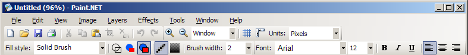
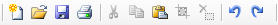
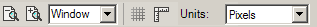
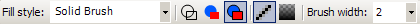
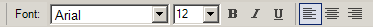

Toolbar
The toolbar contains buttons for accessing many common commands, controls for configuring how the image is viewed, and controls for configuring how many of the tools perform drawing.

Common Actions

These buttons allow you to quickly perform many common actions. From left to right, they allow you to create a new image, open an existing one, save, print, cut, copy, paste, deselect, undo, and redo.View Controls

These controls allow you to modify how the image is presented to you. The first two buttons let you zoom in or out, while the next control allows you to set a specific zoom level. You may also choose the "Window" zoom level, which causes the zoom level to be maintained such that the image is always (this is the same as selecting the View → Zoom to Window menu option).The next two buttons toggle the visibility of the grid, and the rulers. The last control lets you specify whether you wish to work with pixels, inches, or centimeters. This does not change the units that are stored in the image; you may change those using the Image → Resize menu command.
Drawing Controls

These controls may be used to affect the way many of the tools perform their drawing. The fill style may be set to control how shapes and the Paintbrush fill their shapes.The next three buttons let you select one of three shape-drawing options. The first one specifies that shapes will be drawn as just the outline using the primary color. The next one specifies that shapes should be filled, with no outline. Note that the shape will be filled using the secondary color. This is for consistency with the third button, which draws both the outline and the filled interior: the outline is drawn using the primary color, while the interior is filled with the secondary color.
The last two buttons are a bit more specialized, and you may not ever need to use them. The first one enables or disables antialiasing, and the second one is used to enable or disable alpha blending. A more thorough discussion of these is available while reading about the Tools menu.
Text Controls

These control how text is drawn using the Text Tool. You may select a font, a font size, and toggle the three common formatting styles of bold, italics, and underline. You may also choose whether text is justified to the left, center, or right of the insertion point. More information is available while reading about the Text Tool.
Copyright © 2006
Rick Brewster, Tom
Jackson, and past contributors. Portions Copyright
© 2006 Microsoft Corporation. All Rights Reserved.